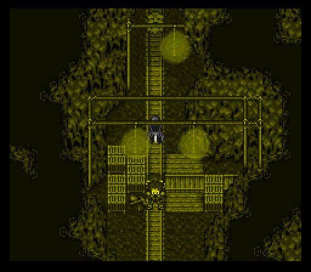
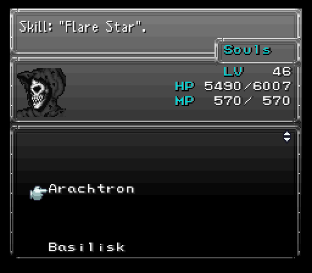
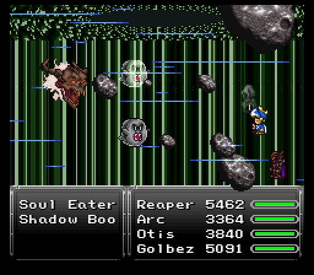
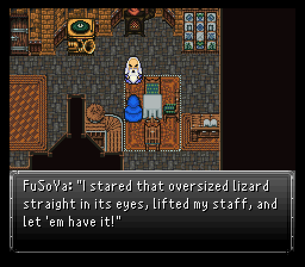

Part 27: Dream Demons
Avalon's soul-searching:
First off, I decide to bet a Majin Vest at the coliseum to fight a Beelzebub. All you need to survive is a Flame Cloak to absorb Flare Star's damage, Reflect Ring to bounce back its Flare spells, and praying to god Blaster doesn't decide to randomly ruin your life since it can either instantly kill, do ~6000 damage (which still kills here), or miss completely.
The reward for winning that fight is something that was well worth using the funds I got from my off screen grinding to buy a few extra Majin Vests for betting off, the Dragon Soul relic. Boosts vigor by 50%, boosts max hp by 50%, and increases defense by 18. Only certain people can equip it.
Enough about that though, time to do today's dungeon romp. For this, Avalon needs to be in the party since we're heading back to Mist Castle which is located south of Taured. There's a few new items to grab, but the real reason to come here is to take a rest in the guest bedrooms. Everyone wakes up after the rest...except for Avalon. He just gets three random jerks deciding to invade his soul and we somehow have to jump in after them.

When your vision clears, whomever was in the third position of your team finds a very familiar buddy waiting to greet them, Reaper. People trying to swipe his souls? Not on his watch! He joins up for this duration of this journey to save Avalon.
Equipment wise, Reaper keeps his trusty Soul Harvest, Serpent Mask, and Exodus Token. His armor's been traded out for a Chaos Plate and he's added a Dragon Soul to his 2nd relic slot. Overall, his magic defense might be a little concerning, but the Dragon Soul's massive hp boost makes up for it.
The enemies here aren't too much of an issue. Belladonnas and their Banshee Scream can do a decent chunk of damage, but it's only going to be a concern for those who came here immediately after getting the airship and getting Avalon back into the party. More importantly, Reaper gets new souls to call upon with new enemy defeats. The previously mentioned Belladonna gets special move that hits insanely hard. So much so that Reaper can reliably hit for over 5k damage if the move goes off.
Other monsters include:
- Skeletor - Encountered these guys back on Mt. Etlich.
- Shadow Boo - These Nova-spammers like to bounce their spells off other monsters with Wall. They also have dangerous spells like Forsaken and Vertigo, should they stay alive for long. They can drop Ghoul Medals.
- Shinobi - Encountered them inside the Sarlaac. Still as annoying as ever with Jitsu of Fushin.
- Saki Mitama - They like to use Twin Plasma, Revenge, and they even have a chance to use Ultima on their third turn, which is one of the strongest spells in the game... so focus on taking them out before that happens.
- Vlakorados - Could have encountered one of these while escaping the floating continent. They can hit pretty hard.
- Time Mage - Uses time magic, who'da thunk it! If just one remains alive, it'll cast Meteor on the second turn.
Important: For some monsters, such as Shadow Boo, you will not receive a soul (for Reaper) from them after battle due to a game limitation - any monster ID over 255 is not programmed to have a gainable soul, or rage as it was called in the original. Unfortunately there is no way to know which monsters are past 255, other than just not receiving a soul from them after the battle. It is not a bug in other words.


The gimmick of this first leg of the dungeon is simple. Several doors that lead you to other portions of the area. You'll need to get your other two party members back, then make your way to the door in the southwest that has a diamond shaped set of tiles around it. Head inside, then head to the door to find the three loony jerks waiting for a beatdown.

This boss fight is against three targets, K. Crimson (in the very back), K. Queen (top of the screen), and ZA WARUDO (on the right). Basically they are each a different element - one is fire, one ice, and the other lightning. K. Queen has the strongest magic power, The World is the strongest physically, and K. Crimson falls right in the middle of both, but with more speed and health. Honestly, I feel like this dungeon was meant to be tackled at a lower level than I'm at currently because none of them can do any lasting damage.
There is a big threat though and it's K. Crimson. Partially because the jerk will cast Arise on fallen allies or use White Wind for healing, but moreso due to having Blaster available. Once that jerk falls though, the others will follow suit very quickly. If all three did stay alive for some amount of time, they would have fired off a Delta Hit.
No drops, but there are a few tabs to steal. K. Crimson has a Might Tab, K. Queen a Magic Tab, and a Stamina Tab from The World.
After passing through the door, you'll be on the Skull Train from long ago. A few of the rooms are different, but the enemies sure took a hike. Only got into a few battles the whole way through. But hey, I'm certainly not complaining!

A couple new enemies here:
- Rotsucker - Aerial creatures that thrash about.
- Hachiman - Making a triumphant return from the floating island.
- Giga Koopa - Terrorizes characters into submission and beams them out upon being attacked.
There is one important item you don't want to forget though and it's called the Lump of Coal. This will be needed for something once we get back to the real world. Press the switch and memorize the pattern of chests. In the next car, press the switches in this order: 1, 3, 1, 2, 1, 3. Now pass through and arrange the pattern of the chests from earlier, then press the switch in order to proceed.
After fumbling with a few switches in the front of the train, we get knocked back by a blinding light, then sucked right out the door and into a fight with Hellraiser. There is, however, way to bypass this boss, and that's by pressing the left and right switches down, and the middle one up, which is the opposite of how it was in the previous Skull Train. If you do that and then attempt to exit, you'll skip the boss battle. But we did it wrong on purpose for science.
The Hellraiser is a haunted motorcycle that can potentially be a little problematic. Not only is it quite fast and cannot be slowed, and has strong spells at its disposal, such as Merton and Flare, Ninth Dimension and Hyperdrive, but it's also a back attack, and it can counter every attack with Death Sentence or Frostbite. So prepare accordingly with fire protection and an Exodus Token relic, or a Lich Ring. Hellraiser also opens up with a group status attack in Poltergasm or Chaotic Disaster... so this battle can quickly go down hill if you're not prepared.
As the battle continues, Hellraiser will attempt to bridge the gap between the party by moving closer. It'll do this three times and then attack with four regular attacks in a row, then move back to its starting position. Right after that it gains haste as a hidden status and jumps into the air. Upon landing it goes back to the beginning of it's attack pattern.
You should be able to take Hellraiser out rather quickly though if you are negating the status and fire attacks, as it is not high-level and doesn't have that much hp. Being the unholy abomination that it is, it is weak to both Holy and Earth. You can steal a Speed Tab from it and it drops a most-welcomed armor, the Spectral Suit, which gives a suitable character Image status.
The next dream zone is a mine of sorts. Easy enough to get out of here. Head south and you'll go outside. Go to the entrance on the eastern side of the pass, then head in and right back out. This brings you to a completely different cliff room where you run west across a bridge and it just so happens to collapse. Great isn't it?
But first, we want to encounter a very important cybernetic spider-like monster called Arachtron (from the Doom franchise), so that Reaper will get access to Flare Star from its soul. Just wonder around until you encounter one before stepping towards the bridge.
Avalon's soul-searching II:
Time to wrap up this sidequest. It's not as easy as walking right into the throne room though as you need to view three cutscenes. One's in Avalon's family bedroom to the northeast of the throne room and the other two are outside. The monsters are the same as before.
Do be sure to check everywhere because there's some new items lying around...and most importantly make damn sure you check out the storage room you can access from the castle walls in the southeast. Not only is there an always welcomed Quicksilver inside a chest, there's a very important key item in here as well, the Dream Stone. This is going to unlock what I'm going to guess is a 2 hour marathon once more on my end, heh. You'll see when I get there.

Once the throne room is unsealed, go in to find a very angry Soul Eater...and also very dumb. Trying to outfox Reaper is like trying to get the upper hand on my man Megaman X. You're either going to fail hard at first base or get vaporized a minute after you think you've gotten the upper hand. May as well kick Soul Eater's ass and see how the jerk manages to hit both of those failure conditions.
Soul Eater comes with a pair of Shadow Boos to assist it, which once removed will respawn after some time. They use moves like Nova and Tsunami for damage or Magic Drain to try siphoning someone's mp. Reaper's the only one who's likely to get roughed up by the magic attacks...and even then, 1000-1500 damage isn't very much when he's rocking a max hp total four times as large. The Shadow Boos are dodgy though so you may need the Nightvision helmet or Paladin Icons to deal with this if you're physically aligned. Try to remove them quickly though because if left alive they can use things like Forsaken and Vertigo, which could spell disaster.
Soul Eater doesn't sit back and do nothing though. It opens the fight with Level 5 Death, then throws out its own magical assault which once again isn't much to speak of. He's more of a trap-laying boss if that makes sense, with spells like Sleep and Timebomb. Quasar looks scary, but it only does ~1500 to everyone, meaning it's only going to be something to watch out for if you came here right after picking up Avalon. Soul Eater does have access to instant death spells in the form of Death for single and the far more nail biting AoE variant Vortex. If a character dies, Soul Eater will attempt to use Animate Dead, which brings back the KO'd ally as a Zombie, and if that happens Soul Eater gains a bunch of beneficial hidden statuses that you'll want to dispel immediately.
The Soul Eater will attempt to put your party members to sleep and then drain and attack them. Besides the extra lives gimmick, Soul Eater also employs a tactic where it makes itself immune to all damage taken. A text will appear indicating that "Soul Eater is invulnerable", and "Must counter with Time magic". Only Haste or Slow will work and it's randomly determined after its glows white. When you hit it with the right spell, it'll flash red and be vulnerable again, then cast either Flood, Quasar, or Vortex. If you guess wrong, he will say "Welcome to your doom!" and proceed to use either Gravity or the rarely seen Soul Drain. This could potentially be a deadly combination if Gravity comes after Soul Drain - Soul Drain is an uncurable hp drain to all allies which can only be removed by death or turning into a zombie. You can counter it with Regen, so having Spiky Tiger as a summon might not be a bad idea.
It can be a rather drawn-out fight, but if you play it safe and know what you need to do and how to go about it, things should be relatively smooth. And if by some unforgivable reason none of your characters know Slow or Haste, Reaper's Floater Soul has Slow at least, and well...good luck! Before sending the Soul Eater packing, make sure to steal its Necronomicon. It'll drop a very nice relic, the Soul Booster. Nullifying all elements? Well worth it!
After the fight, Soul Eater gets destroyed on two fronts...first, trying to steal another Soultaker's bounty is a huge no no. Obviously this means the jerk's dying...but Reaper can't do it himself since that goes against some pact too. That's where the actual execution comes in because Avalon wakes up and gets a point on his kill count to dispel Soul Eater once and for all.
After Avalon comes to grips with his family once and for all, he gets a bunch of rewards. His Havoc Sword command gets an upgrade that removes the split hp damage for each enemy targeted beyond the first, he gets one of his best weapons in the Onimusha, and he gets the Reaper Doll. Reaper now gets to strut his stuff out in a more vast world which I am in full approval of!

Finally, returning to the throne room reveals a new magicite on the throne, Anima. Only teaches one spell, but it's Ultima....and Golbez is one of the lucky guys that can equip the esper. That can only mean GOOD things later, heh.
Brinstar blues
Just showing off that beautiful Soul Booster relic and my current team before entering back into Lunaris. FuSoYa and Eiko are very important here because a cutscene triggers if both are present in the party. Turns out KlaTu tried to deal with Kraid...and didn't exactly do so well. FuSoYa decides enough is enough and wants to put and end to this Kraid hunt once and for all.

The aptly named Kraid's Lair can be found on a small island just west of Lunaris. It's a small dungeon, but with an annoying gimmick to make up for its size. It's not the enemies who aren't particularly threatening, but rather one annoying gremlin that wants you to bring tons of Dark Matter to it if you want to pass.
To get that Dark Matter, you'll have to take teleports that whisk you to a random portion of the cave. There's not that many different rooms though so you can memorize where the chests are and run to them pretty quickly. Some of these cave outlets have Metroids skulking about too, but they're easy to kill by now.
This place is home to a bunch of other strange monsters as well, such as:
- BonziBuddy - Jumps around and uses poison spells.
- Garo - Counters magic 100% of the time with either Nova, Break, or Flare.
- Kunopegos - A weak, yet cruel sea-horse demon.
- MedusaHead - Petrifies characters by glaring at them. Uses Big Guard and Psi Blades. Most dangerous when in a group of three, as they will unleash Delta Attack after some time. They also have Speed Tabs as a rare steal.
- Ogopogo - A protecter of the cave, uses either Freezing Dust or Snowball upon death.
- Pain Demon - Uses Black Shock, Death, turns characters into zombies, and will blindly attempt to use Animate Dead.
- Poe Boy - Cloaked spirits that freely roam graveyards.
- Razorclaw - Powerful ursine beast that can attack up to three times in a row.
- Vargshoom - A poisonous mushroom with spores that cause instant death. Can use Vertigo and Quake if the last monster alive.
There is one important item to grab though. Two of the chests never close up when opened, but only one contains anything of value, Eiko's Starry Hood. Besides the solid defenses and granting 2x the amount of gil from battles, it grants resistance to fire, ice, and lightning, nullifies wind, and absorbs holy. Pair this up with a Shaman Dress and you can cover for the hood's weakness to earth. Safe to say Eiko's sitting in a very good position right now with her defenses.

After giving enough Dark Matter to the gremlin to make him move, there's a timeskip. I decided to go take out Avalon and put Reaper in his slot, then go pickup a few new souls for him to utilize and finish learning Ultima with Golbez.
As for the main reason to come here...Kraid has four Metroid buddies assisting it. Only going to be a threat if they confuse someone via Crimson Moon, but otherwise a couple decent AoE attacks will wipe them all out easily.


After nuking Kraid's minions, the beast flashes, then decides everyone's gonna die because it busts out an extremely painful spell, Shadow Flare. Considering its normal attacks don't do all that much damage, Shadow Flare's 3500-4000 damage to each party member is a huge slap in the face. Amazed I didn't wipe after the initial cast. Reaper ain't having none of this nearly dying bullcrap...unless he gets hit by Kraid's special move Belly Spikes, then maybe he's going to care.
Aside from Shadow Flare though? Kraid doesn't have much else that you need to worry about. Quake's the only other issue as is the fact the Metroids will respawn whenever they damn well feel like it.
Kraid has a Golden Apple for stealing and drops a Nightvision helmet. Only Arc and Shadow can equip this, but it's notable due to granting 100% hit rate using the Fight command, similar to what the Paladin Icon provides. Really nice, but pales next to the fact that Shadow Flare is an Arcane spell that FuSoYa can learn. Really expensive mp wise and would benefit from a Void Stone or Celestriad relic to curb the cost, but does insanely good damage to all enemies.
After the fight, FuSoYa goes back to tell KlaTu of his success, but falls asleep during the sermon. Too bad for him KlaTu was faking his injuries the whole time just to force FuSoYa to man up and deal with Kraid.
Getting ever so closer to the point where the final dungeon is a valid destination, but there's several bosses left in the field and one more dungeon to explore. We'll get cracking on some of the optional dragons roaming about next time.